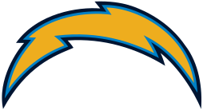

* Some teams have undergone name and/or location changes over the years, such as the Raiders, Rams, Chargers, and Commanders. Data reflects their performance regardless of rebranding or relocation.
Seahawks @ Chargers
2014 Week 2:
Seattle
Seahawks
1 - 1
21
Los Angeles
Chargers
1 - 1
30
Sunday, September 14, 2014
03:05 PM
| Team | Spread | Total | ML |
|---|---|---|---|
 SEA SEA |
-5.5 | o44.0 | SEA |
|  LAC | +5.5 | u44.0 | LAC |
Season Stats
* All stats shown are from the current season, up to but not including this game.
| SEA |
LAC | |
|---|---|---|
| Records | ||
| W/L Record | 1-0 (0-0 Away) | 0-1 (0-0 Home) |
| Against The Spread | 1-0 (0-0 Away) | 1-0 (0-0 Home) |
| Over/Under | 1-0 (0-0 Away) | 0-1 (0-0 Home) |
| Offense | ||
| Avg. Pass Yds | 191.0 (25th) | 238.0 (18th) |
| Avg. Rush Yds | 207.0 (2nd) | 52.0 (31st) |
| Avg. Total Yds | 398.0 (14th) | 290.0 (27th) |
| Avg. Points | 36.0 (2nd) | 17.0 (21st) |
| Defense | ||
| Avg. Pass Yds Allowed | 189.0 (7th) | 304.0 (24th) |
| Avg. Rush Yds Allowed | 80.0 (10th) | 109.0 (16th) |
| Avg. Total Yds Allowed | 269.0 (3rd) | 413.0 (21st) |
| Avg. Points Allowed | 16.0 (7th) | 18.0 (13th) |
Fantasy Points by Position (In Progress)
| SEA |
LAC | |
|---|---|---|
| Points For | ||
| Quarterback | ||
| Running Back | ||
| Wide Receiver | ||
| Tight End | ||
| D/ST | ||
| Kicker | ||
| Points Against | ||
| Quarterback | ||
| Running Back | ||
| Wide Receiver | ||
| Tight End | ||
| D/ST | ||
| Kicker |
Game Stats (In Progress)
* All stats shown are from the current season, up to but not including this game.